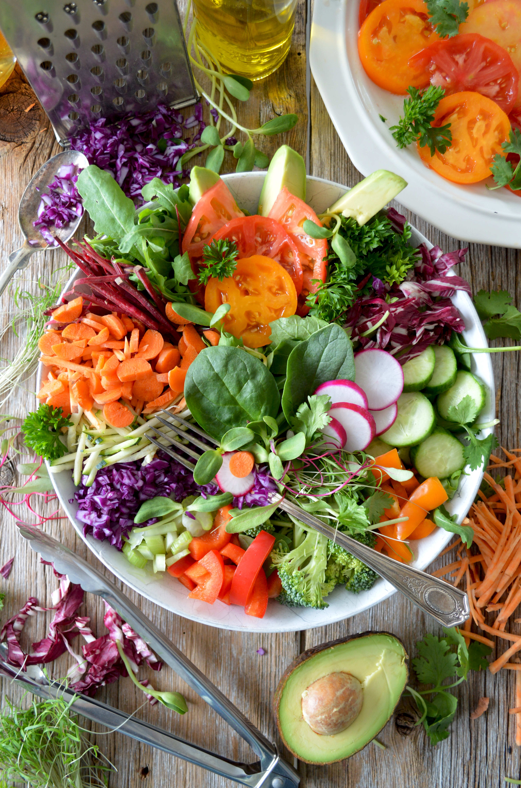

Healthy eating means eating a variety of foods that give you the nutrients
you need to maintain your health, feel good, and have energy. These nutrients
include protein, carbohydrates, fat, water, vitamins, and minerals.
Nutrition is important for everyone.
When combined with being physically active and maintaining a healthy weight,
eating well is an excellent way to help your body stay strong and healthy.
If you have a history of breast cancer or are currently undergoing treatment,
eating well is especially important for you. What you eat can affect your immune system,
your mood, and your energy level.
Health food is a marketing term to suggest human health effects beyond
a normal healthy diet required for human nutrition. Foods marketed as health foods
may be part of one or more categories, such as natural foods, organic foods,
whole foods, vegetarian foods or dietary supplements.These products may be sold
in health food stores or in the health food or organic sections of grocery stores.
While there is no precise definition for "health food", the United States Food
and Drug Administration monitors and warns food manufacturers against labeling foods
as having specific health effects when no evidence exists to support such statements.
In our site we will show some of healthy meals and give you many tips
to help you have a healthy life.we will also introduce many tips related to
your eating routine to help your health become more better.
A balanced diet is the best way to stay healthy
A balanced diet is about adding all of
the essential factors necessary for growth, so that every part of the body gets what
it needs to function properly. A balanced diet is also indicative of a proportioned diet.
This means that you’re not only eating the right food items, you’re also eating them
in the proper amounts. Adopting a balanced diet not only boosts your health, but also
helps with weight loss.
So what exactly is included in the components of a balanced diet?

Unsaturated Fats
1-Carbohydrates
An excellent source of energy, carbohydrates should comprise roughly 60% of a person’s diet or
310 grams. This is where most of your energy comes from if you’re engaged in activity throughout
the day; eat lots of carb-rich food items such as rice, pasta, potatoes, and wheat.
2-Vitamins
There are so many essential vitamins today, but pay particular attention to the intake of the following:
vitamin A, vitamin C, vitamin B, and vitamin D. Taking multivitamins for these four is ideal although
obtaining them from fruits and vegetables is even better.
3-Minerals
Minerals aid with the release of energy from food items, plus they interact with the organs
to promote growth. For example, iron helps with energy, while calcium works towards bone and teeth
development. Again, there are lots of minerals today, but the most important ones in your diet are:
iodine, potassium, sodium, and those mentioned above.
4-Unsaturated Fats
A lot of people avoid fat thinking that they cause weight gain, but this is far from the truth.
Healthy fats, or those derived from good sources are dairy products, meat, and fish. Their main
function is to help regulate body temperature, as well as the absorption of vitamins. They help with
slow energy release, which is perfect for long-distance runners. Consume around 70 grams per day.
.png) Healthy Food
Healthy Food